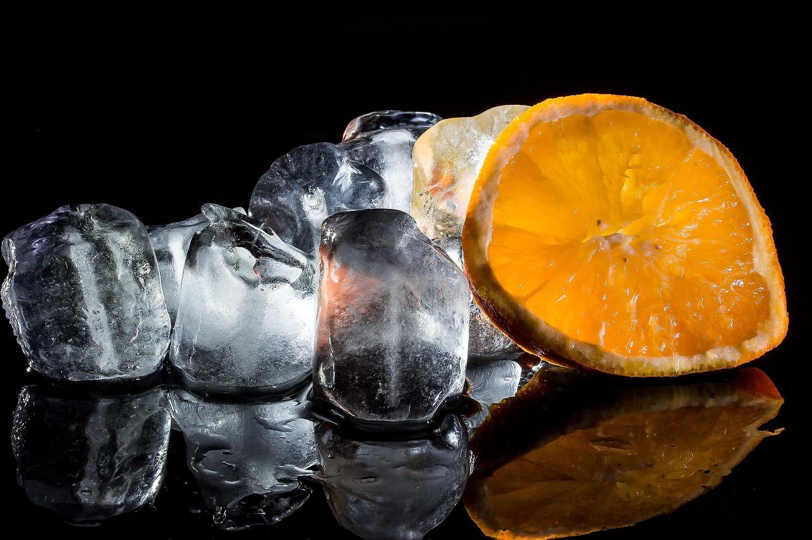
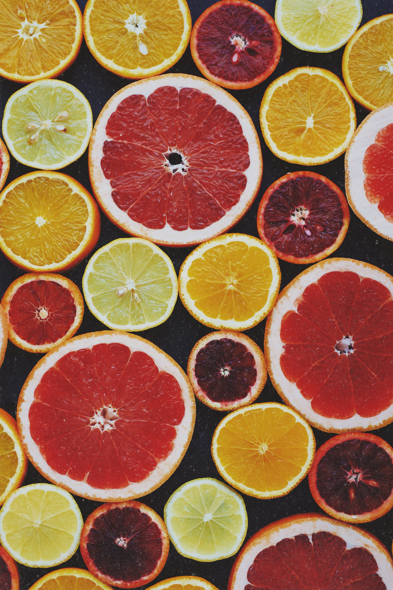

El gin tonic, a menudo abreviado como "G&T", es un cóctel clásico y refrescante que se ha convertido en una de las bebidas más populares en todo el mundo. Este cóctel simple se prepara con gin y agua tónica, generalmente servido en un vaso alto con hielo.
50 ml de gin (puedes elegir tu marca de gin preferida) 150 ml de agua tónica (puedes elegir una tónica de calidad) Cubos de hielo Rodaja de limón o lima (opcional, para decorar) Ramita de enebro (opcional, para decorar)